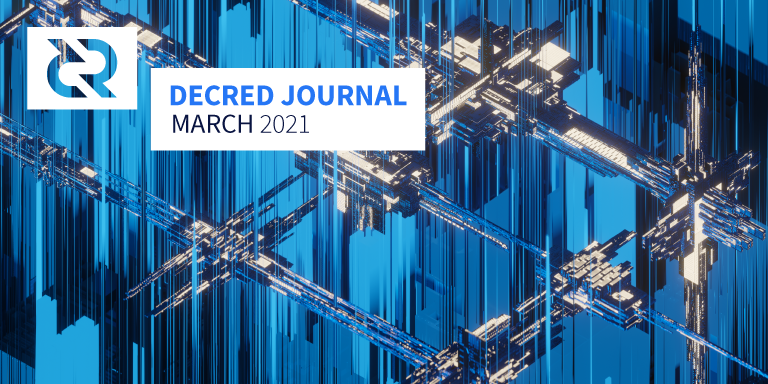
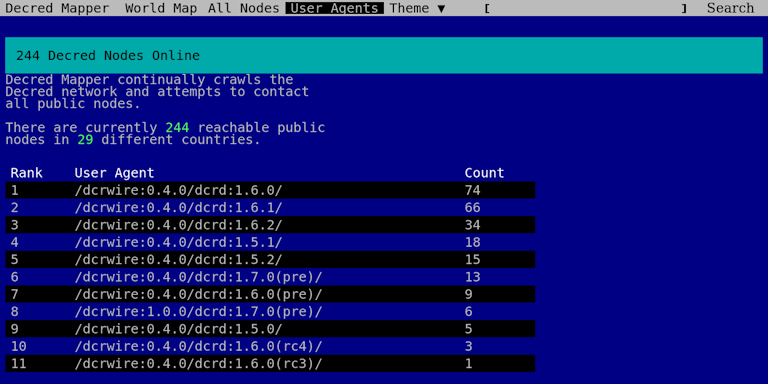
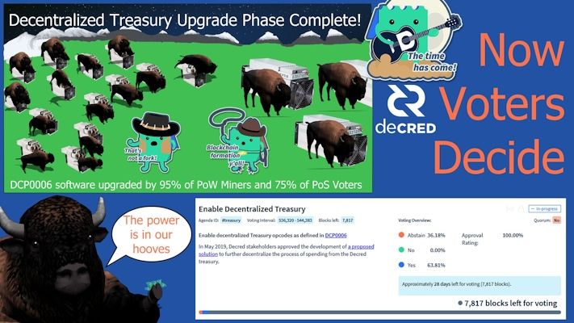

Decred月报 – 2021年3月

图片：@saender
三月份的亮点：
- 启用去中心化国库的共识投票已获得批准，预计会于5月7日左右启动，届时版本低于v1.6的软件节点将被分叉。
- v1.6.2已于4月初发布，它修复了混币和VSP购票的许多问题，并改善了SPV节点的稳定性以及其它改进。
- Politeia更加灵活和可扩展的存储后端开发已经进行了一年多，现在终于完成了！
- Decred社区已经为项目选择了一种灵性动物，雄伟的野牛！
内容：
硬分叉来了
启用去中心化国库的共识投票已获得批准，新共识将在5月7日左右激活。低于v1.6的节点将停止同步，因此请升级以保留在网络上。您可以在此处跟踪剩余的日期。
最新版本v1.6.2修复了一些与VSP购票和混币有关的错误，并改进了SPV的操作。请在此处查看完整的发行说明和下载，并且不要忘记在安装前对其进行验证。
开发进展总结
除非另有说明，否则此处报告的工作仅限为“合并到主核心存储库”状态。这意味着这项工作已经完成、审查并集成到高级用户可以构建和运行的源代码中，但对于普通用户来说，还不能使用。
合并在master和v1.6.2版本中：
- 仅将快速阻止公告发送给完整的对等节点，而不发送给无法正确处理它们的轻量级客户端。这样可以提高SPV连接的稳定性，因此，SPV钱包应该需要更少的重新扫描。
本月的主要新增功能是用于处理标准地址的新软件包，该软件包比其替换的代码更易于遵循和使用。它也更通用，允许将来添加新的地址类型。如果您想知道“脚本”和“地址”之间是如何关联的，或者“标准”与“共识”之间有何不同，请查看包装中崭新的自述文件或遵循示例和全面的测试以全面了解其工作原理。感谢所有评论者并欢迎新来者-拥有一双崭新的眼睛总是好事！
新的地址软件包以及其他与地址相关的合并更改都是为未来的共识投票奠定一些基础和基础设施的一部分。
其它合并工作：
合并在master和v1.6.2版本中：
- 防止向混合服务器收取低费用，这些费用现已被拒绝
- 固定的UTXO处理，以避免余额足以购买一张选票时出现“余额不足”错误
- 如果在dcrwallet设置中配置了VSP，则使用命令更新vspd票证的投票选择
setvotechoices - 新的
accountunlocked命令报告帐户加密和锁定状态（对于DCRDEX是必需的，但通常也很有用） - config标志以禁用日志记录到文件
修补程序版本v1.6.2已修复了多个错误，并更新了Decred- patched trezor-connect库。
合并在master中：
- 使用pi-ui库中的新滑块组件
- 重组余额概览
- 列出UTXO视图转换为模态
- 改进了与Trezor相关的模态的布局
- 项目已更新为最新的Electron 12 和 Webpack 5
- 大约25个拉取请求结束了为期1年的探索，将代码库迁移到具有功能组件，挂钩和CSS模块的现代React编程风格
- 增加的UI测试覆盖率
- 约11个bug修复
对来自5个贡献者的总共53个PR进行了合并，更改了504个文件，添加了14.5K，并删除了1.47K行代码。没有太多用户可见的更改，这些大量的内容基本上意味着要进行大量的“幕后”基础架构升级，从而使将来的开发变得更加容易。
正在进行中：DCRDEX集成和设计更新。
经过近一年的开发，向更可扩展和灵活的存储后端的史诗迁移已合并。总体而言，它为我们带来了以下优势：
- 可扩展性-不再受限于单个实例的文件系统
- 时间戳和数据是分开的，从而可以真正审查（和删除）数据，而无需权衡取舍。请注意，检查只会删除数据，而不会删除证明服务器已看到数据的记录，即“审计线索”是不可变的。
- 能够检索任何数据的带密码时间戳证明，例如单个注释。在Git后端没有简单的方法可以做到这一点。
- 一种适当的插件体系结构，在该体系结构中，插件可以通过附加功能（如评论或票证投票）来扩展带有时间戳的通用“记录”。无需编写代码即可在配置文件中打开和关闭插件。
- 简化的
politeiadAPI politeiawww重写API使其具有通用性且与应用程序无关，而插件可处理专用路由- 检查请求以获取更多详细信息
从统计数据可以看出，后端和前端的更改重写了大部分Politeia代码库：添加了51K行，删除了42K行，并且更改了474个文件。
对于开发人员，v0.2.0标签标记了支持politeiad Git后端，politeiad v1 API以及大多数politeiawww www/v1 和 www/v2API的最后一次提交。
欢迎每个人都通过test-proposals2.decred.org加入新版本的测试小组。
其它变化：
- politeiavoter命令行工具的点滴模式是真正随机的，而不是使用随机的时段
短期内，我们将专注于功能开发，这些功能在这些体系结构升级期间处于倒退状态。诸如来自作者的提案更新，为在Politeia上运行的社区启动Reddit之类的论坛，添加非正式的利益相关方民意测验等。
从长远来看，我们的想法是使Politeia成为可配置的，带有时间戳的数据存储，可以作为各种用例的基础。 (@lukebp)
候选发布版2对于即将到来的V1.2.0是测试版本。有关错误修复，改进和一些重大更改的完整列表，请参见发行说明。
合并在master中：
@matheusd发现了一个有趣的hack，该hack可以在几乎不为HTLC构建的现有LN代码更改的情况下实现PTLC。
PTLC（点时间锁定合约）是闪电网络中令人振奋的发展，因为它有潜力解决当前使用的HTLC（哈希时间锁定合同）的局限性，并有可能使新的用例成为可能。
实际上，启用PTLC的黑客对于@matheusd是如此简单，以至于他还能够使用它编写一个有趣的结构，称为多救赎者交易树（MRTTREE），并在其上建立一个离线LN捐赠/付款原型。该系统由修补的dcrlnd，用于协调MRTTREE的PoC服务器和修补的Decrediton组成。在发送给lightning-dev邮件列表的email和演示视频中对数学进行了解释（离线LN付款演示在15分钟左右开始）。
该hack行为是实验性的，需要进行认真的密码研究以确保其安全性。尽管如此，这项工作在以LN驱动的多所有者选票（选票拆分的一种更好形式）以及MRTTREE支持的其他用例（例如链下捐赠和众筹）的背景下还是很有趣的。与原始blog文章中提到的基于HTLC的MRTTREE构造不同，基于PTLC的构造不需要新的操作码：现有的Schnorr checkig操作码（或最终添加的任何新操作）足以启用它。
您可以在最近的Decred Depth中@matheusd从28分钟开始了解有关Decred的LN的更多信息。
- 重置和更改密码的功能
- 禁用帐户的功能
- 允许对您的订单表进行排序
- 指示断开状态
- 支持针对DCR钱包的基于帐户的加密和锁定（Decrediton将使用它仅锁定交易帐户，而不锁定其他帐户）
- 允许多个经过身份验证的会话（同时登录不同的浏览器）
- 将最新费率估算发送给客户以支持SPV客户，改进订单估算并加强安全性
- 发送原始交易数据以容纳没有mempool且一直处于黑暗状态的SPV客户端，直到挖掘出合同的tx为止（这也使该过程更加强大，可防止tx在网络上的不良传播）
- 以太坊simnet工具在开发过程中进行测试
- Bitcoin Cash支持的基础
- 添加了数据库版本控制并生成了历史交易数据（交易量，最高和最低等）
- 更新为使用Webpack 5和其他较新的模块
- dex.decred.org 更新了很酷的新视觉效果@ 30000fps
合并了来自6个贡献者的25个PR ，增加了22K，删除了9000行代码。
正在进行中：以太坊支持，新的注册协议（更强大+支持任意资产的费用支付），演示Electron集成以及多项其它改进。
以太坊专家对所使用的交换合约的反馈表示赞赏。
进行中：
- 新的用户发送页面
- 更新了概述和帐户页面的用户界面
- 添加了关于页面
- 向帐户详细信息页面添加了抵押和其他信息
- 调整了文字输入
- 带有日志的调试页面
- 输入密码后，在应用启动时开始同步
- 同步还原的钱包时请求密码，以允许生成地址
- 代码清理和bug修复
正在进行中：“ Politeia提案”页面和进一步的UI工作。
- 限制POST请求中允许的地址数量
- 扩展脚本 页面已从dcrdocs中移出
- 代码存储库移至decred组织
- 许可证已更改为ISC以符合F-Droid要求
除了Google Play和直接APK下载外，该应用程序现在还可以在F-Droid上使用！
@jholdstock发布了一个网站，其中包含节点和每个用户代理的数量的世界地图。源代码可在此处获得。该站点的Testnet版本在此处。Unix灰胡子将享受386386主题。
@bee已编译了一份全面的文档，其中包含有关选票拆分和v1.6软件的所有最新知识。关键要点：
- 现有的选票拆分解决方案将与v1.5.2软件一起使用，直到2021年5月7日左右停止同步
- 每个人都同意可以进行选票拆分，但是由于需求低（目前每月有81张票证大约占所有票证的0.2％），目前没有多余的资源可用于分配票务
- 最低的收获是修补客户端以支持dcrwallet v1.6中的新身份验证
- 这是新开发人员熟悉Decred的好机会，同时参与Decred的选票更便宜
其它：
- decredpower.com收到了大量的新链接和设计调整
- Bug Bounty报告说，它已经处理了157个提交项目，其中15个有资格获得付款。恭喜@proabiral登上名人堂！

图片：Decred Mapper的未来派设计
人员
欢迎来到新的第一次贡献者，他们的代码已合并到主存储库中：@tuhalang (godcr)!
截至4月2日的社区统计数据：
| 项目 | 数量 | 变化 |
|---|---|---|
| Twitter 粉丝 | 43,628 | +706 |
| Reddit 订阅 | 10,797 | +238 |
| Matrix #general 用户 | 407 | +25 |
| Discord 用户 | 1,409 | -35 |
| Telegram 用户 | 2,594 | +76 |
| YouTube 订阅 / 观看 | 4,460 / 179K | +40 / +4K |
| GitHub dcrd 星 / 叉 | 589 / 255 | +5 / +3 |
在约90个跟踪的帐户中检测到显着的活动：
- 主要的Twitter，Reddit和Telegram又有一个月的良好增长
- 自3月中旬开始追踪CoinGecko以来，它获得了+409个赞（至9,516个）
- @Checkmate aka“ The Machine”获得+1,816位关注者（+ 35％，至7,042位），每天以〜34条推文发布另外1K条推文
- @PermabullNino 增加了398位关注者（+ 13％，达到3,391）
- @ConsensusRough 的关注者人数达到惊人的+ 34％（达到580）
- @decredbr TG获得了6％的用户（至384）
- @Decred_ES TW拥有+ 5％的关注者（至1,365）
- DECRED BRasil FB在30天的帖子中从50下降到19明显下降
上面是最值得注意的亮点，但是您可以在新的专用位置查看3月和2月的完整报告（最终可以容纳我所有的数字-@bee）。
感谢Decred在所有平台上的大使提高了对该项目的认识！
治理
在3月份，国库收到了11,531 DCR，支出了4,196 DCR-但是其中3,010被延迟支付了1月份的发票，因此，支付给2月份的发票的金额仅为1,184 DCR。使用3月份的每日DCR / USD平均汇率$ 161.01，得出的总收入为186万美元，支出为67.6万美元。2月为过去工作支付的美元数据是2月的13.5万美元（113.76美元）和1月的16.3万美元延迟付款（54.25美元）。截至4月4日，国库余额为663,658 DCR（1.24亿美元，折合187.04美元）。
三月份发表了三份提案。
- The Moderation 2021 提案 估算了该年度的预算为8,800美元（最高为16,500美元），并获得了93.4％的支持和36％的投票率。
- The Design 提案 涵盖2021年余下时间的设计提案最多需要58,850美元，并且报告说，先前提案的支出不足，因此仅使用了其预算的60％。大部分的支出不足都与身份和视觉传达子域相关。先前提案的工作日志报告已发布在此处。
- 视频内容提案（第3阶段）即将续订，另外6个月的最高预算为$ 18,800，并增加了2个新的贡献者（@karamble和@DecredSociety）。在上一个阶段中，仅使用了预算的41％。
@bee发布了所有有效批准提案的列表，以跟踪即将过期的提案。
《Politeia Digest》第41期提供了有关本月提案的更多详细信息。
网络
全网算力: 3月哈希率 以〜410 Ph/s开启，以〜496 Ph/s结束，最低为228 Ph/s，并在整个月达到620 Ph/s的峰值。
4月1日报告的哈希率分布：Antpool 37％，Poolin 29％，F2Pool 10％，Easy2Mine 8％，Luxor 1.3％，BTC.com 1.3％，Coinmine 0.04％，UUPool 0.04％，未知13％。
在4月1日之前实际开采的1,000个区块的分布情况： Poolin 30%, Antpool 27%, F2Pool 8%, Easy2Mine 4%, Luxor 2%, BTC.com 1.6%, Coinmine 0.1%, 未知 27%.
以前最高的UUPool的哈希率似乎已迁移到Antpool和F2Pool。
Staking: 票价154.3-221.5 DCR之间变化，具有30天的平均在178.0 DCR（-3.7）。自2017年价格算法更改以来，在2021年的前三个月中，机票价格出现了最高的波动，在150至220之间波动。
锁定量 为7.10-7.46亿DCR，这意味着循环供应的56.0-58.7％在买票-再新的历史高点。
VSP: 4月1日，vspd服务器持有6.6K现场票，而传统dcrstakepool服务器则持有4.0K现场票。与3月1日相比，已经有超过2.2K的票证迁移到了新的vspd系统。旧版VSP报告的活跃用户为11K，总用户为22K。所有VSP（17个旧，11个新）合计占票池的26％。
节点: 根据dcrextdata，在整个3月中，大约有215个可访问节点。
截至4月1日快照的节点版本（总共247个，仅dcrd）：v1.6.1-32％，v1.6.0-32％，v1.5.1-10％，v1.5.2-8％，v1.7开发人员版本-8 ％，v1.6开发人员版本-6％，v1.5.0-2.4％，v1.6.2-1.2％。
混币的份额已从39％逐渐增加到44％。每日混合量在200-350K DCR之间变化。
截至4月1日，Decred的闪电网络已经看到34个节点（+4），60个通道（+4），总容量为20个DCR（+3.2）。
@Checkmate分享的图表显示了交易量的增加（从循环供应量进行调整后，2021年的交易量看起来会更加戏剧化），以及自2020年10月以来，费用在总区块奖励中所占的比例如何从0.01％升至0.12％。
整合
decred.raqamiya.net VSP宣布将关闭。截至4月5日，自2017年以来，它已有128位活跃用户和284位用户，有52张现场门票，并投票超过2万张门票。VSP具有自定义UI，已投票门票的电子邮件通知以及3大洲的4个投票服务器。感谢您的服务！
CexZ 交易所 宣布 DCR / BTC对的上市，并访问了r / decred。
警告：Decred Journal的作者不了解上述任何服务的可信赖性。在将您的个人信息或资产信任给任何实体之前，请先进行自己的研究。
外展
3月，一个新的野牛主题开始爆炸，最终DCR野牛物种获得了自己的专门从事@BisonContent的Twitter帐户。大部分野牛研究都发生在#trading上（近400次提及）。首先提到的内容可以追溯到2019年关于纽约市区块链基础设施公司Bison Trails的聊天（现在恰好提供Decred服务！）。但是，当@Void和@karamble在2015年题为“欧洲野牛野牛野牛团体运动期间的集体决策”的论文中发现@Decid与Decred的联系更紧密时，炒作的确开始了。
团体协调和活动同步对于在集体运动中保持团体凝聚力至关重要。这种同步产生的集体决策受生态和社会人口因素的影响。（...）如果发起人遵循大多数人指示的方向，则很可能会跟随发起人，这表明有投票程序。
@DCRann Telegram频道的创建是为了反映重要的公告并减少对Twitter的依赖。
@pavel通过运行withDecred.org建议分享了更多见解。DCR总共分5轮分发了11.6次。即使没有得到奖励，人们在Twitter上的参与度也很高。即使使用赞助的推文，吸引人们访问该网站也是一个挑战。Twitter用户最喜欢快速消费并喜欢/转发其内容的情况。考虑到这一点，网站内容归结为钉在Twitter个人资料上的巨大推文风暴。
感谢上述扩展实验的报告，因为它们可以帮助社区了解有效的方法和无效的方法，并更好地传播我们的信息。
Monde PR在三月份的成就：
- 创建并宣传2个故事以资助和加密出版物
- 回应了1条评论请求
- s获得1次媒体采访
Monde PR保证的新闻报道：
- @ jy-p出现在Finance Magnates播客中，谈论比特币，区块链治理和DCR，并与包括Tech Centry在内的4个新闻媒体联合发布
提醒大家，如果您有很棒的推文或内容要分享，请毫不犹豫地将其放入#media聊天中，并通过@decredproject请求转发。

图片: Bison PoWer
活动
参加：
- 3月12日至14日 - Hackathon Nayarit 2021 - 互联网。以西班牙语表示的赞助了由纳亚里特教育部组织的黑客马拉松。为了准备参与者，西班牙团队举办了由5场网络研讨会组成的Blockchain Education培训周。Hackathon的$ 1,000奖金池划分如下：第一名$ 500，第二名$ 300和$ 200在提出最终项目的其余20名参与者中分配。黑客马拉松结束后，获胜者进行了一次学习课程，以学习如何使用Decrediton，移动钱包以及有关如何存储和使用加密货币的一般信息。比赛持续了3个小时，获奖者有机会在获得奖品的同时提问。更多细节在这里。
- 3月15日 - State of crypto adoption in Morocco - 互联网。@arij受邀参加了CryptoTvplus的#InsideBlockchain上的Tony Obiajuru的采访，她在此讲述了摩洛哥的加密货币采用状况，Decred及其项目工作。
媒体
精选文章：
- Decred的@arij就CoinDesk在摩洛哥采用加密货币的状况发表了评论。该文章已翻译成4种以上的语言，并在摩洛哥电子新闻中引起了轰动。摩洛哥中央银行行长对此文章发表评论，称他们已经组建了一个研究加密货币和中央银行数字货币的委员会，以跟上创新的步伐。比特币不是货币，因为它是投机性且不受监管的，但是在最终人们无法阻止它的使用。作为后续行动，该银行发布了禁止使用比特币的视频，因为它风险太大。
- 在f2pool的两周一次的PoW综述Mar-09 和 Mar-23发行中提到了Decred的v1.6.1版本和“用户激活的硬分叉”以分散资金。
- 什么是Decred？由Samuel Sherwood (exodus.com)
视频:
- Matheus Degiovani采访@elima_iii (youtube) - 新资金，代码，LN等
- Decred staking教程 - [2021 更新] 由 @Exitus (youtube)
- 探索Real Vision(realvision.com)的Decred和链上分析-在@Checkmate的采访中，您可以在YouTube上查看免费样本（提及液体BTC的空前减少）或完整剧集，方法是在网站上进行注册
- PTLC，MRTREE和离线LN付款 (youtube)
- Decred 双周报 - 1.1亿美元的财政部权力下放，链上治理投票，网络ATH及更多@Exitus(youtube)
音频:
- Decred的jake 讨论比特币，blockchain治理，DCR，及更多 Rachel McIntosh (youtube)
翻译:
- Decred 月报 2021年2月被翻译成阿拉伯文（@arij，@ abdulrahman4），中文（@Dominic）和西班牙文（@francov_）。谢谢大家传播Decred新闻！
社区讨论
精选的Reddit帖子：
- Decrediton v1.6.1混币买票中问题的汇编以及如何解决这些问题的方法
- 邀请参加Twitter民意调查锦标赛（以及讽刺于将其投向痴迷于可靠投票技术的社区的讽刺意味）
- 产生媒体以进行最新的共识投票（以及发表这个挑战的挑战）
- 三月的最后一次价格讨论再次变得非常明智，并将Decred与Python进行了比较
Twitter讨论：
- @ jy-p通过建立更公平的选择加入金融体系来朝相反的方向发展
- @ammarooni建议多谈谈锁定在选票中的美元价值，因为超过10亿美元是相当可观的成就
- @bochinchero已经挂价格涨势不断上升的股权参与，投票率和混合活动，并指出，可替代性强庞大时：
现在，超过$ DCR可用供应量的43％被混合使用了。有些人认为选择加入隐私或透明分类帐永远不可能真正替代……我实在想不出一个愿意接受货币但拒绝一半流通硬币的理性参与者。 (@TheBochinchero)
市场
3月DCR交易价格在140.16-180.60美元 / BTC 0.00275-0.00310之间。日平均价格为$161.01。
@PermabullNino 发布了Decred的链上数据处于野兽模式，2月份的本地单位结算量比比特币多4倍。
@Checkmate更新了他的“ Lindy Coins”与比特币的比较表，因为它从$10上涨到$58。DCR继续脱颖而出。
相关外部信息
3月的大型DeFi Dumpster Fire是PAID，遭受了无限造币攻击，攻击者向自己发行了1.8亿美元的PAID，但他们显然只能通过将其转换为其他货币（而不是迅速贬值）来获取300万美元的价值（下降了85％）的付费代币。在验尸中，解释了攻击者获得了原始合同部署者对私钥的访问权，并使用它来“升级”合同，以便他们可以铸造新令牌。快照将用于“重置” PAID令牌，以清除攻击者被发现之前无法出售的令牌。
SushiSwap一直在解决一个重大难题关于如何分配从2020年10月起欠流动性提供商的代币，代币有6个月的“归属期”，而如何分配代币的问题在2021年1月提出。SUSHI持有人已经投票反对直接空投代币并选择了一种索赔机制，该机制将收取索赔人的费用，但随后发现，智能合约的代码已经过编辑，因此通过第三方智能合约（例如Harvest.finance）与之交互的用户无法再对其进行索取。 ，其用户将被欠这些令牌的5-6％）。部署此更新的开发人员给出的原因与“寄生场”将转储其令牌分配有关。最新的是，这些农场可以提交有关如何分配其分配的提案，
Cosmos选民之间已批准了Cosmos“区块链内部通信（IBC）”协议，该协议以1.12亿至75的绝大多数获得批准，它有望实现满足特定条件的区块链之间的安全通信。由于Cosmos是唯一支持该IBC标准的区块链，因此目前还不是很有用，但是其他基于Tendermint的区块链也可能很快也会增加支持。
根据3月5日核心开发者会议的决定，以太坊的EIP 1559已包含在即将到来的伦敦硬分叉中。EIP1559将从根本上改变交易费用的计算和支付方式，并承诺会大幅改善，从而赢得大多数用户和开发者的支持。用户体验。但是，矿工已经表示 反对这一变化，超过60％的人反对这一变化，因为它将干扰他们的一种收入来源。Hasu的分析表明，矿工无论如何都会坚持下去，因为他们仍然可以从区块奖励和矿工可提取价值（MEV）中获得丰厚的利润，而替代方案可以解释为对网络的攻击，并且很可能会破坏ETH。价格（因此是矿工的底线）。
英国税务局已经更新了其处理加密资产的指南，首次涵盖了抵押-这将以与目前处理采矿收入相同的方式进行处理，但可能会为将来的差异化处理敞开大门。
隐私权倡导者@ 6102bitcoin收到一份报告，Bitstamp Europe要求用户在提款后不久向其用户说明使用Wasabi钱包进行的CoinJoin交易，该请求是在活动开始数月后提出的。一份答复指出，实施这些规则的政府对运营商施加了压力，例如法国DASP授权要求以两种方式（入站和出站）检查链上啤酒花。此前Bitstamp所做的消息询问基于荷兰客户共享的个人信息不寻常的数量，包括净资产和年收入，居住证明，以及菲亚特和加密资金的来源。
在显然是错误地删除了他们的频道之后，CoinDesk的YouTube帐户被暂停了大约1天。
兑现加密货币的新方法显然已在俄罗斯普及，“埋藏的宝藏”或将空投的现金滴落到特定坐标上。
关于月报
这是Decred Journal的第36期。有关所有问题，镜像和翻译的索引，请参见这里。
在经过最少的健全性检查之后，来自第三方的大多数信息都会直接从来源中继。Decred Journal的作者无权验证所有声明。请当心诈骗，并自行进行调查。
您可以在此处提交内容，以供撰写下一期月报内容。我们随时欢迎您的反馈和贡献。
感谢 (字母排列):
- 写作和编辑: bee, degeri, l1ndseymm, richardred
- 评论和反馈: arij, davecgh, dnldd, jholdstock, JoeGruff, lukebp, matheusd
- 封面图片: saender
- 资助: Decred stakeholders
中文社区
- 社区网址
- 微博
- 微信公众号
- 中文电报群
- bilibili频道
- QQ群号-258412796